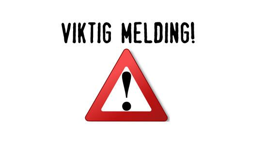

Arrangement
1. trening 2021

Klubben har etter regjeringens pressekonferanse den 18.01.2021 hatt et kort online styremøte og kommet til konklusjonen at selv om vi nå har lov til å åpne opp treningen for de under 20 år fra 19.01.2021 så venter vi noen få dager til. Klubben starter sesongen for fult mandag 25.01.2021. Dette kommer av flere forhold.
- trening er da satt opp til mandag 25.01.2021. Vi vil da såfremt ingen endringer kommer ha de "vanlige" treningstidene som vi har hatt den senere tid. Medlemmer som har fylt 20 år eller eldre kan dessverre fortsatt ikke komme på trening. Vi vil gi ut ny informasjon så fort vi får det.
Idretts-, fritids- kultur- og livssynsarrangementer
- Barn og unge under 20 år kan trene og delta på fritidsaktiviteter som normalt, både ute og inne. De kan også unntas fra anbefalingen om 1 meters avstand når det er nødvendig for å drive med aktiviteten. For barn og unge kan ordinær treningsaktivitet internt i klubber, lag og foreninger derfor gjennomføres, men kamper, cuper, stevner mv. må fortsatt utsettes. (Nytt)
- For voksne videreføres anbefalingen om ikke å drive organisert aktivitet innendørs. Utendørs kan voksne trene dersom det er mulig å holde god avstand.
- Toppidretten anbefales å utsette alt seriespill i to uker. Norges Idrettsforbund bes om å koordinere dette med særforbundene. (Nytt)
- Kulturarrangement som forestillinger, oppvisninger m.v, samt kurs/konferanser og tros- og livssynseremonier utsettes dersom disse samler personer fra flere kommuner. Folk bes om å respektere begrensninger som arrangøren informerer om når det gjennomføres arrangementer forbeholdt innbyggere i en enkelt kommune. Dette omfatter både utendørs og innendørs arrangementer, men ikke begravelser. (Nytt)